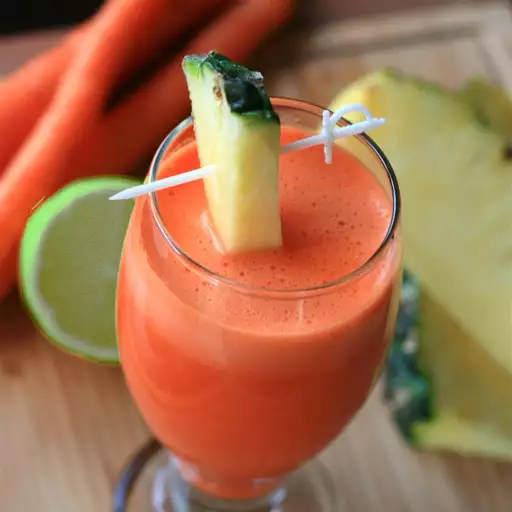

Pineapple Sunrise
Description

This pineapple juice recipe is a refreshing way to start your day with
only 3 ingredients packed full of vitamins!
Perfect for those who
don't like the overly sweet flavor of carrot juice. The pineapple and lime
really tone down the sweetness.
Ingredient
- 1 lime, halved
- 1 pound carrots, chopped
- 2 cups fresh pineapple chunks
- ice, as desired
Steps
-
Process lime, carrots, and pineapple through a juicer; serve over ice.
Tips
- Cook's Notes:
-
One pound of carrots is about 6 to 7 medium carrots. Once juiced, it
makes about 8 ounces of juice.
-
Two cups of fresh pineapple is about 1/3 of a fresh pineapple and makes
about 8 ounces of juice; there is no need to core it.
-
Use only 1/2 the lime if you prefer the juice less tart; there is no
need to peel it.